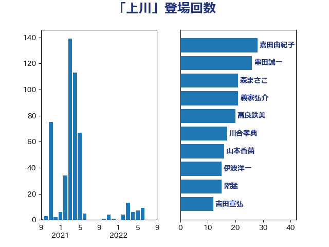

単語「上川」

| 嘉田由紀子 | 無所属 | 28 回 |
| 串田誠一 | 日本維新の会 | 26 回 |
| 森まさこ | 自由民主党 | 21 回 |
| 義家弘介 | 自由民主党 | 21 回 |
| 高良鉄美 | 無所属 | 20 回 |
| 川合孝典 | 国民民主党 | 17 回 |
| 山本香苗 | 公明党 | 16 回 |
| 伊波洋一 | 無所属 | 15 回 |
| 階猛 | 立憲民主党 | 15 回 |
| 吉田宣弘 | 公明党 | 12 回 |
| 磯崎仁彦 | 自由民主党 | 9 回 |
| 大口善徳 | 公明党 | 8 回 |
| 井林辰憲 | 自由民主党 | 7 回 |
| 菅義偉 | 自由民主党 | 7 回 |
| 中谷一馬 | 立憲民主党 | 6 回 |
| 国光あやの | 自由民主党 | 6 回 |
| 寺田学 | 立憲民主党 | 6 回 |
| 細田博之 | 自由民主党 | 6 回 |
| 豊田俊郎 | 自由民主党 | 6 回 |
| 上川陽子 | 自由民主党 | 5 回 |
| 宮崎政久 | 自由民主党 | 5 回 |
| 清水貴之 | 日本維新の会 | 5 回 |
| 盛山正仁 | 自由民主党 | 5 回 |
| 井出庸生 | 自由民主党 | 4 回 |
| 塩村あやか | 立憲民主党 | 4 回 |
| 小泉進次郎 | 自由民主党 | 4 回 |
| 小野田紀美 | 自由民主党 | 4 回 |
| 高木毅 | 自由民主党 | 4 回 |
| 今井絵理子 | 自由民主党 | 3 回 |
| 伊藤孝恵 | 国民民主党 | 3 回 |
| 後藤祐一 | 立憲民主党 | 3 回 |
| 本村伸子 | 日本共産党 | 3 回 |
| 柚木道義 | 立憲民主党 | 3 回 |
| 渡辺猛之 | 自由民主党 | 3 回 |
| 田所嘉徳 | 自由民主党 | 3 回 |
| 赤澤亮正 | 自由民主党 | 3 回 |
| 上野賢一郎 | 自由民主党 | 2 回 |
| 大岡敏孝 | 自由民主党 | 2 回 |
| 小林鷹之 | 自由民主党 | 2 回 |
| 山下貴司 | 自由民主党 | 2 回 |
| 山口俊一 | 自由民主党 | 2 回 |
| 山本順三 | 自由民主党 | 2 回 |
| 山東昭子 | 自由民主党 | 2 回 |
| 山田賢司 | 自由民主党 | 2 回 |
| 浜田聡 | NHK党 | 2 回 |
| 稲田朋美 | 自由民主党 | 2 回 |
| 細田健一 | 自由民主党 | 2 回 |
| 野村哲郎 | 自由民主党 | 2 回 |
| 金子恵美 | 立憲民主党 | 2 回 |
| 金田勝年 | 自由民主党 | 2 回 |
| 丹羽秀樹 | 自由民主党 | 1 回 |
| 伊佐進一 | 公明党 | 1 回 |
| 伊藤孝江 | 公明党 | 1 回 |
| 北側一雄 | 公明党 | 1 回 |
| 古屋範子 | 公明党 | 1 回 |
| 古川禎久 | 自由民主党 | 1 回 |
| 安江伸夫 | 公明党 | 1 回 |
| 小池晃 | 日本共産党 | 1 回 |
| 山井和則 | 立憲民主党 | 1 回 |
| 山添拓 | 日本共産党 | 1 回 |
| 岸真紀子 | 立憲民主党 | 1 回 |
| 平井卓也 | 自由民主党 | 1 回 |
| 平木大作 | 公明党 | 1 回 |
| 打越さく良 | 立憲民主党 | 1 回 |
| 新妻秀規 | 公明党 | 1 回 |
| 杉尾秀哉 | 立憲民主党 | 1 回 |
| 梅村みずほ | 日本維新の会 | 1 回 |
| 森英介 | 自由民主党 | 1 回 |
| 橋本岳 | 自由民主党 | 1 回 |
| 河野太郎 | 自由民主党 | 1 回 |
| 浜地雅一 | 公明党 | 1 回 |
| 海江田万里 | 立憲民主党 | 1 回 |
| 牧原秀樹 | 自由民主党 | 1 回 |
| 石川大我 | 立憲民主党 | 1 回 |
| 福島みずほ | 社会民主党 | 1 回 |
| 稲富修二 | 立憲民主党 | 1 回 |
| 稲津久 | 公明党 | 1 回 |
| 自見はなこ | 自由民主党 | 1 回 |
| 落合貴之 | 立憲民主党 | 1 回 |
| 辻元清美 | 立憲民主党 | 1 回 |